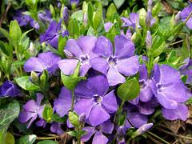

Pervenche petite et grande

Pervenche petite et grande (Vinca major et Vinco minor de la famille des Apocynacées) Faible toxicité.
Partie toxique pour les chats en général et le Korat en particulier :
Feuilles.
Symptômes du processus pathologique :
Hypotension et vasodilatation transitoires passant souvent inaperçues.
Origine de la toxicité (principe actif) :
Un alcaloïde, la vincamine et plusieurs flavonoïdes.